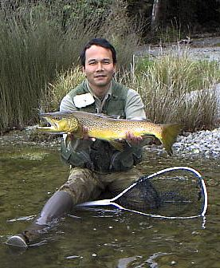

釣行日誌 ＮＺ編 「その後で」
ブリー
1999/12/16(THU)-5
その鱒はネットの中でじっとしていた。黒いラビットを顎の横辺りでしっかりとくわえている。上下の顎、口腔一面に鋭い歯がびっしり生えており、フックを外す指先が知らず知らず傷つけられる。顎と尾びれの大きさに驚かされる。

しばし水に浸けた後、ブリントが写真を撮ってくれた。すぐに水に戻し、しばらく支えているとゆっくりと動きだし、沖の深みにゆらゆらと消えていった。
「がっし！」
と握手を交わし、やったなぁ！と微笑みがこぼれる。
しばし、呆然と、こちらの体力の回復も含めて休んでいると、ブリントが
「ラビットは効くだろ！」
と笑う。にっこりと頷き、フライの結び目を再度確認してボートに乗り込む。
再び湖岸を攻める静かな漕行が始まり、ボートは枯れた大木が林立する明るい入り江に近づいてゆく。どうやら雨の日だけ水が流れ込む涸れ沢の入り江らしい。砂地の湖底に藻の緑が美しい。
南島ウェストランド一帯の湖岸にはフラックスと呼ばれる細長く丈夫な葉っぱを茂らせた植物が密生しており、それらの入り組んだ根株の周辺はまずまず第一級のポイントと呼んで良さそうであった。
根株の際にストリーマーがポチャり、と着水し、砂地を引き始めた途端にどこからともなく影が閃いてゴクんと竿が熨される。
「せーのォ.....」
「ストラーイク！」
なんであの大きさの魚体が見えないのかが不思議であるが、極めて巧妙な保護色のせいでヒットするまではまったく鱒の姿が見えない。
「沖へ持ってけ、沖へ！」
周辺には至るところ倒木が沈んでおり、あの枝の中に潜られたらいかな３Ｘのティペットも悲しく切れること必至なのである。どこまでが限界かわからなかったがドラグを強めにして、ブリントのボート捌きと協力して鱒を沖合に連れ出す。まだ水中に魚影は見えない。
「居たなぁ！」
「居ましたねぇ！」
ギリギリ、ジジジジジーッ、ギリギリギリギリ、ジジジーッという一進一退の攻防の後で、ようやく例の黄金色が水中に揺らめく。まことに心臓に悪い大きさである。
だましだまし鱒の顎を水面まで上げると、突然、鱒の口から丸々と太った10cmほどのブリー（カジカの一種）が吐き出される。
「？？？」
「・・・」
この鱒は獲物をまだ胃袋に収納する前に、次の獲物に飛びついたらしい。
「ブリントさん、今の見ました？」
「ああ、荒食いしてるな」
死んだカジカは白い腹を見せ、ゆっくりと反転しながら湖底へと消えてゆく。と、またしてもボートが岸に寄ってしまい、いくつかの枝が水中で鱒を声援している。もう取り込めそうな気配はあるのだが、ネットを見た鱒は再度立ち枯れの幹に突進する。
「なんとか頭をこっちに向けて！ 潜られたらおしまいだぞ！」
「ぐぐぐぐ.....」
横引っ張りでこらえつつ鱒を誘導する。別の方向に突進する鱒の行く手にはまたしても倒木が待っている。ブリントが鱒と倒木の間にネットを構え、身を乗り出して掬い込む。
「やったぜ！」
「やりましたね！」
後半冷や汗ものであったが、なんとか今日の２尾目を取り込んだ。うー、やれやれ。安堵の溜息が出る。フックを外して鱒を放つと、ボートはもう足の立つほどの浅場に来ていた。
「連中賢いから逃げ方をようく知っているんだ」
「まったく、まったく.....」
「しかしあのブリー（カジカの呼び名 Burry）には驚いたなぁ。ここらは砂地だからカジカのいい住処なんだろう」
振り返ると、たしかにその入り江には多くのブリーが地味で不安な生活、空襲下のロンドン市民のような暮らしを送っているようであった。頭上から迫り来る鱒たちの影の下で......。
釣行日誌ＮＺ編 目次へ
サイトマップ
ホームへ
お問い合わせ